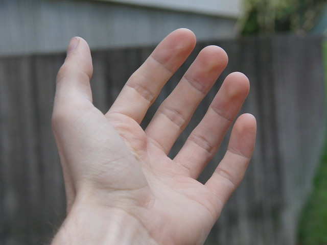

⛏I need a hand with this mining task.
このマイニングを手伝ってください。
[aɪ ˈniːd ə ˈhænd wɪð ðɪs ˈmaɪnɪŋ ˈtæsk]
- need の語末 /d/ が a の弱形 /ə/ に連結→[ˈniːdə]
- a の弱形 /ə/ が hand /h/ に連結→[ə ˈhænd]
アイ ニード ア ハンド ウィズ ディス マイニング タスク

⛏I need a hand with this mining task.
このマイニングを手伝ってください。
⛏I'm handing you a diamond ore.
ダイヤ鉱石をあげます。
⛏You need to hand over the redstone to me.
レッドストーンを譲ってください。
I am handing you a crafted sword right now.
今まさにクラフトしたソードをあなたに渡しています。
She is handing out supplies to the builders.
彼女はビルダーたちに物資を配っている。
We were handing out torches when the creepers arrived.
クリーパーが到着した時、私たちは松明を配っていた。
He was handing me a diamond when the lag hit.
ラグが起きた時、彼は私にダイヤモンドを渡していた。
They had been handing out resources all day before the server crashed.
サーバーがクラッシュする前、彼らは一日中リソースを配っていた。
We had been handing over tools to builders when they logged off.
彼らがログオフした時、私たちはビルダーたちにツールを引き渡していた。
I have handed over my diamond tools to trusted players.
信頼できるプレイヤーにダイヤモンドのツールを引き渡した。
She has handed out supplies since the season began.
シーズンが始まって以来、彼女は物資を配ってきた。
By the time the raid ended, we had handed over all our valuables.
レイドが終わるまでに、私たちは全ての貴重品を引き渡してしまっていた。
They had handed over the base to newcomers before the reset.
リセット前に、彼らは基地を新参者に引き渡していた。
We have been handing out supplies all morning to support the builders.
朝ずっとビルダーをサポートするために物資を配り続けている。
They have been handing over responsibilities since the new admin took charge.
新しい管理者が引き継いで以来、彼らは責任を譲り渡し続けている。
I'll hand you a crafting table when you join.
参加するときにクラフトテーブルを渡すよ。
They'll hand over the base once they get bored.
飽きたら基地を引き渡すだろう。
⛏Can you lend a hand with the redstone circuit?
レッドストーン回路を手伝ってくれませんか？
⛏Hand over your diamonds now!
ダイヤモンドを引き渡しなさい！
⛏I have a pickaxe at hand.
つるはしが手元にあります。